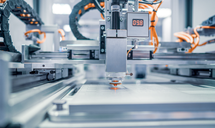

    <?php
    include_once "../include/header.html";
    $PAGE_CODE_1 = "03";
    $PAGE_CODE_2 = "0301";
    ?>
    <div class="sub examples">
        <div class="sub-visual">
            <span class="sub-title">
                Molding & Filing
            </span>
            <p class="title">적용사례</p>
            <?php include_once "../include/tabmenu.html"?>
        </div>
        <div class="details">
            <div class="inner">
                <div class="title">
                    제품 출고 사진 제목 영역<br />
                    <span class="date">2023-10-11</span>
                </div>
                <div class="info">
                    <div class="info-box">
                        
                    </div>
                    <div class="text">
                        디스플레이, 태양 에너지, 무선통신, 전기, 전자, 반도체, 자동차 BIO 산업, 우주항공, 접착제, 화장품, 윤활제 외에도 모든 액체정량토출 기술 등 모든 분야에서 제품의 품질 및 생산성 향상, 고부가가치 창조를 위한 연구는 지속되어 가고 있고, 기업의 생존 또한 여기에 집중되고 있습니다. 이러한 시대적 필요성에 따라 액체 제어기술 또한 다양한 Application의 개발과 전문화된 전용 기술을 발전시켜 나가고 있습니다.
                    </div>
                </div>
            </div>
            <a href="./example.html">목록</a>
        </div>
    </div>
    <?php
    include_once "../include/footer.html";
    ?>

